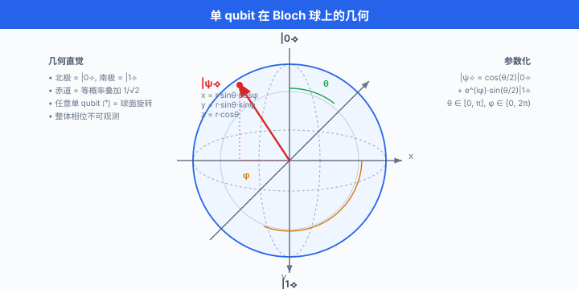
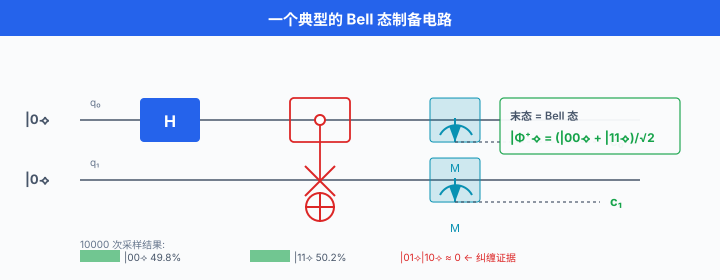
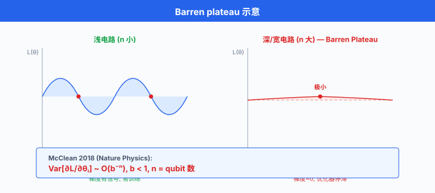

量子机器学习¶
一句话总结：量子机器学习把量子比特的叠加与纠缠塞进 ML 流程，用参数化量子电路当"神经层"，期望在特定任务上突破经典算法瓶颈。
🗺️ 本章导览¶
- 本章覆盖前沿 AI：量子 ML → 神经形态 → 太空数据中心 → 去中心化 AI → 脑机接口
- 01. 量子机器学习 (本节)：量子门、变分量子算法、量子加速、中国生态与瓶颈
- 02. 神经形态计算：脉冲神经网、类脑硬件
- 03. 太空数据中心：待补
- 04. 去中心化 AI：待补
- 05. 脑机接口：待补
这一节我们从量子比特开始，一路走到变分量子算法、量子核方法、贫瘠高原，最后看看 2026 年的硬件能做到哪一步、瓶颈又在哪里。 读完你应该能向同事讲明白：VQE/QAOA 究竟在干什么，为什么大家吵量子优势，以及最近学界到底退潮还是真香.
1. 量子计算基础：比特、叠加、纠缠、测量¶
要理解量子机器学习 (Quantum Machine Learning, QML)，我们得先把"量子计算"这件事本身讲清楚。 别被它的神秘感吓到 —— 量子计算的核心只有四件事：量子比特 (qubit)、叠加 (superposition)、纠缠 (entanglement)、测量 (measurement). 掌握这四件，后面的变分算法、核方法就只是它们的工程化组合。
1.1 量子比特 (qubit)¶
经典比特 (bit) 是 0 或 1. 量子比特 (qubit) 则是两者的复数线性组合:
\(|0\rangle\) 和 \(|1\rangle\) 是两个标准正交基 (类似坐标轴上的 \(\mathbf{e}_1\) 和 \(\mathbf{e}_2\)), \(\alpha\) 和 \(\beta\) 是复振幅。 模平方 \(|\alpha|^2\) 和 \(|\beta|^2\) 是测得 0 或 1 的概率，两者相加等于 1.
你也可以把 qubit 当成一个"球面上的点"——这就是著名的 Bloch 球 (Bloch sphere) 表示:

图说: Bloch 球把 qubit 的状态映射到三维单位球面上。 北极 \(|0\rangle\)、南极 \(|1\rangle\)，赤道上的点对应"等概率叠加" \(\frac{1}{\sqrt{2}}(|0\rangle + e^{i\phi}|1\rangle)\). 任何单 qubit 量子门都对应球面上的一个旋转。
注意一个微妙之处：\(\alpha\) 携带的全局相位 (global phase) 不可观测 —— 即 \(|\psi\rangle\) 和 \(e^{i\gamma}|\psi\rangle\) 在物理上完全等价。 只有相对相位 (即两个振幅之间的相位差) 才能在干涉中被实验观察到。
1.2 叠加 (superposition)¶
叠加不是"既 0 又 1"，更不是"薛定谔的猫真的半死半活". 它真正的意思是：在被测量之前，qubit 的振幅 \(\alpha\) 和 \(\beta\) 同时存在，并在随后的演化中通过干涉彼此增强或抵消。
一个最经典的例子是 Hadamard 门 \(H\):
把 \(H\) 作用到 \(|0\rangle\) 上，我们就得到一个"50% 概率测得 0、50% 概率测得 1"的状态。 但真正的威力在于多 qubit 的叠加 —— \(n\) 个 qubit 处于叠加态时，能同时承载 \(2^n\) 个经典状态。 这就是量子并行性的源头。
重要警告：叠加不等于你能"并行访问 \(2^n\) 个数据". 哥本哈根诠释告诉我们：你一旦测量，系统就塌缩到一个经典结果，其余振幅全部丢失。 这就是为什么 QML 的算法设计必须巧妙使用干涉，把答案"汇聚"到少数几个振幅上。
1.3 纠缠 (entanglement)¶
纠缠是 QML 与"只是把计算随机化"的分水岭。 两个 qubit 的纠缠态 (以 Bell 态为例):
这个状态的关键性质：单独测量任何一个 qubit，结果是 0 或 1 都各占 50%；但两个 qubit 都测，结果必然相同 (00 或 11，不会 01 或 10). 无论两个 qubit 隔多远。
数学上，纠缠意味着无法写成单个 qubit 状态的张量积：不存在 \(\alpha, \beta, \gamma, \delta\) 让 \(|\Phi^+\rangle = (\alpha|0\rangle+\beta|1\rangle) \otimes (\gamma|0\rangle+\delta|1\rangle)\). 纠缠是 QML 能产生"超越经典"关联性的物理基础。
直觉：把纠缠态想成两枚硬币，远在宇宙两端，但当你翻一枚，另一枚立刻呈现相关面。 这听起来违反相对论 (信息传播比光快?)，但其实不能用来传信：你的本地测量结果是随机的，没有可控的自由度。
1.4 测量 (measurement)¶
测量是 QML 唯一能看到结果的地方，也是它"漏信息"的地方。 测量一个 qubit 的某个可观测量 (observable，比如 Pauli-Z)，你会得到:
- 以 \(|\alpha|^2\) 的概率得到结果 \(+1\) (塌缩到 \(|0\rangle\))
- 以 \(|\beta|^2\) 的概率得到结果 \(-1\) (塌缩到 \(|1\rangle\))
测量后，系统的状态被破坏性地更新为对应的本征态。 这意味着一旦你测过，之前精心培育的叠加就被打散了 —— 想再来一次，必须重新制备。
QML 的工作流因此常被描述成:
- 制备一组 qubit 的初始态 (通常是 \(|0\rangle^{\otimes n}\))
- 应用一系列量子门 (酉变换，详见 §2)
- 测量末态
- 经典计算机根据测量结果调整参数，重复 1–3 (这是变分算法循环)
2. 量子门：让 qubit 旋转的语言¶
量子计算的本质是对 qubit 的酉变换 (unitary transformation). 这些酉变换就是量子门。 几个基本门构成了量子编程的"字母表".
2.1 单 qubit 门：Pauli 矩阵与 Hadamard¶
Pauli-X 门 (比特翻转 NOT):
Pauli-Y 门 (比特翻转 + 相位翻转):
Pauli-Z 门 (相位翻转):
Hadamard 门 (造叠加):
这三个 Pauli 矩阵 \(\{I, X, Y, Z\}\) 配上 \(H\)，就生成了单 qubit 的 Clifford 群 —— 它们能完成你能想到的大部分"经典逻辑 + 一点点相位". 但 Clifford 群自身不能通用量子计算，还需要非 Clifford 门，其中最常用的是旋转门:
\(R_x(\theta), R_y(\theta), R_z(\theta)\) 三个旋转门配合 \(X, Y, Z\), 任意单 qubit 酉变换都可以由三个旋转门合成 (这就是著名的 ZYZ 分解 或 Euler 分解):
这意味着在 QML 里，几乎所有参数化单 qubit 门最终都落到三个可训练的旋转角上。
2.2 双 qubit 门：CNOT 与纠缠的工厂¶
CNOT (Controlled-NOT, CX) 是 QML 里的主力纠缠门:
控制位为 0 时目标位不变，控制位为 1 时目标位翻转。 我们可以用矩阵写:
CNOT 加上 Hadamard，就能造出纠缠。 经典序列：\(H\) 作用在第一个 qubit，再 CNOT (控制=第一个，目标=第二个)，起步于 \(|00\rangle\) 时你会得到 Bell 态 \(|\Phi^+\rangle = \frac{1}{\sqrt{2}}(|00\rangle + |11\rangle)\). 这是所有 QML 电路中纠缠的种子动作.
2.3 三 qubit 门与通用性¶
Toffoli 门 (CCNOT) 是经典 AND 门的量子对应，在量子纠错中至关重要。 但它在 QML 训练中较少出现，因为它不是参数化的，也不好求梯度。
通用量子计算理论 (Solovay–Kitaev 定理) 告诉我们：任意单 qubit 旋转门 + CNOT 就能以任意精度逼近任意多 qubit 酉变换。 这意味着，QML 在"硬件可用门集"层面有相当大的设计自由度 —— 厂商提供的原生门 (IBM 用 \(\sqrt{X}\)、Rigetti 用 iSWAP、Google 用 Sycamore 的 \(\sqrt{\text{iSWAP}}\)) 本质上都能互相编译。
3. 量子电路：拼出门序列的艺术¶
3.1 电路模型 (circuit model)¶
量子电路 (quantum circuit) 是量子算法的图形化表示：横轴是时间 (从左到右)，纵轴是不同的 qubit，每条线上的方框是量子门。 一组时刻终点的"测量"图标说明在哪一步采样。

图说：上图展示最经典的 Bell 态制备电路：两个 qubit 初始化为 \(|0\rangle\)，第一个经过 Hadamard 门进入叠加，然后 CNOT 把第二个 qubit 纠缠进来，最后测量两个 qubit 各得到 0 或 1. 在 10000 次采样下，你看到的统计只会是
00和11各占 50%，永远不会出现01或10—— 这就是纠缠的可观测证据。
3.2 参数化量子电路 (parameterised quantum circuits, PQC)¶
QML 的核心结构叫参数化量子电路 (Parameterised Quantum Circuit, PQC)，又称 ansatz 电路. 它的意思是：电路里有一些可训练的旋转角度 \(\theta_i\)，末态变成了参数化函数 \(|\psi(\boldsymbol{\theta})\rangle\)，然后我们测量某个可观测量 \(\hat{O}\)，得到期望值:
这正是 QML 的"输出". 注意 \(f\) 是个实数标量 (因为 \(\hat{O}\) 通常选择厄米特算符，期望值是实数)，我们用经典优化器 (梯度下降、Adam 等) 调整 \(\boldsymbol{\theta}\) 来最大化或最小化 \(f\).
所以，PQC 充当了"量子层"的角色，几乎所有 VQA (变分量子算法)、QNN、量子核方法的最内层电路，都长一个样:
# PennyLane 风格的伪代码: 一个 4-qubit 强纠缠层 ansatz
import pennylane as qml
def strong_entangler_layer(weights, wires):
"""weights: shape (n_layers, n_wires, 3)"""
n_wires = len(wires)
for layer in range(weights.shape[0]):
# 每个 qubit 上一个通用旋转
for i in range(n_wires):
qml.Rot(*weights[layer, i], wires=wires[i])
# 环形 CNOT 链, 把纠缠搅起来
for i in range(n_wires):
qml.CNOT(wires=[wires[i], wires[(i + 1) % n_wires]])
3.3 宽度与深度 (width vs depth)¶
- 宽度 (width)：电路使用的 qubit 数 \(n\). 等价于我们能用的量子"内存".
- 深度 (depth)：所有 qubit 上累计的最大门层数 (假设可并行). 反映电路在退相干 (decoherence) 前能进行的演化复杂度。
NISQ 时代硬件的两个硬约束直接绑死 QML 算法的设计:
- 最多 50–200 个可用 qubit (IBM Condor 2023 突破到 1121 qubit，但单次实验可用约 100–400)
- 电路深度一般不超过 100–1000 层 (因为每一层 ~ 几十到几百 ns 噪声累计)
这意味着 QML 算法必须对噪声和 qubit 数同时鲁棒，这是为什么大多数工作的 ansatz 选 硬件高效 ansatz (hardware-efficient ansatz, HEA) —— 把旋转门和 CNOT 紧紧贴在硬件原生门集上，不去追求理论上更优雅但需深电路的化学 ansatz.
4. 变分量子算法 (VQA)：把量子电路当 f(θ)¶
变分量子算法 (Variational Quantum Algorithm, VQA) 是当前 QML 的唯一实用性范式. 它的工作模式是:
- 准备一个参数化电路 \(U(\boldsymbol{\theta})\)
- 把数据 \(\mathbf{x}\) 编码进电路 (encode)，或者干脆用一个固定输入态
- 测量期望值 \(\langle\hat{O}\rangle\)
- 经典优化器调整 \(\boldsymbol{\theta}\)，反复迭代
VQA 的灵魂是经典-量子混合：数据准备和参数更新在经典 CPU，期望值采样在量子芯片。 这种分工正是 NISQ 时代能落地的关键 —— 我们没有大规模纠错的能力，但可以把短而深的电路反复跑 1000 次取平均，把噪声平均掉。
下面我们展开 VQA 的三大代表：VQE、QAOA、VQC.
4.1 VQE：变分量子本征求解器¶
变分量子本征求解器 (Variational Quantum Eigensolver, VQE) 由 Alberto Peruzzo 等人在 2014 年提出，当时发表在 Nature Communications 上，论文标题就叫 "A variational eigenvalue solver on a quantum processor"1. 它的任务极其专一：求一个哈密顿量 \(\hat{H}\) 的基态能量.
为什么这事重要？因为分子基态能量决定了化学反应速率、材料性质。 在经典计算机上，精确解这个问题需要指数级资源 (Full-CI)，即使是近似 (CCSD(T)) 也是经典计算的瓶颈。 VQE 的承诺是用量子电路去采样 \(\langle\hat{H}\rangle\)，然后交给经典优化器去更新 \(\boldsymbol{\theta}\).
我们把哈密顿量展开成 Pauli 项之和 (这是分子/凝聚态物理的常用做法):
每一项 \(\hat{P}_i\) 都能用一个短电路测量，因此总期望值:
每个 \(\langle\hat{P}_i\rangle\) 由量子硬件 1000 次采样取平均估计；然后经典优化器 (比如 BFGS、L-BFGS、Adam) 算梯度、调 \(\boldsymbol{\theta}\)，重复。
下面是 VQE 的最小工作骨架:
import pennylane as qml
from pennylane import numpy as np
dev = qml.device("default.qubit", wires=2)
def ansatz(params, wires):
qml.RX(params[0], wires=wires[0])
qml.RY(params[1], wires=wires[1])
qml.CNOT(wires=[wires[0], wires[1]])
@qml.qnode(dev)
def cost(params):
ansatz(params, wires=[0, 1])
return qml.expval(qml.PauliZ(0) + 0.5 * qml.PauliZ(1))
opt = qml.GradientDescentOptimizer(stepsize=0.4)
params = np.array([0.1, 0.1], requires_grad=True)
for it in range(50):
params = opt.step(cost, params)
if it % 10 == 0:
print(f"iter={it}, energy={cost(params):.4f}")
VQE 在小分子 (H₂、LiH、BeH₂) 上已经验证了"量子 + 经典混合确实能给出逼近化学精度的能量估计"，但真实竞争力还要等几百 qubit 的容错时代才能兑现。
4.2 QAOA：量子近似优化算法¶
量子近似优化算法 (Quantum Approximate Optimization Algorithm, QAOA) 由 Edward Farhi、Jeffrey Goldstone、Sam Gutmann 在 2014 年提出，arXiv 编号 [1411.4028]2. 它的目标场景是组合优化: MaxCut、TSP、图着色、约束满足等 NP 难问题。
把问题写成哈密顿量:
- 目标哈密顿量 \(\hat{C}\)：把我们要最大化的目标函数编码成对角算符。 比如 MaxCut：对每条边 \((i, j)\) 加一项 \(\frac{1}{2}(1 - Z_i Z_j)\)，当两顶点同侧时该项为 0、不同侧时为 1
- 混合哈密顿量 \(\hat{B} = \sum_i X_i\)：每顶点一个 Pauli-X 的和，用于在子空间中"搅动"
QAOA 的电路以交替形式演化:
参数 \(\boldsymbol{\gamma}, \boldsymbol{\beta}\) 共 \(2p\) 个，\(p\) 是 QAOA 层数。 测量 \(\langle\hat{C}\rangle\)，交给经典优化器调参。
QAOA 的关键性质：当 \(p \to \infty\) 时，它收敛到精确解。 对小的 \(p\)，它给出 MaxCut 等问题的近似比 (approximation ratio) 是有保证的。 Farhi 等人在 \(p=1\) 时给出 MaxCut 在 3-regular 图上的近似比 \(\geq 0.6924\) (经典 Goemans–Williamson 给出 \(\geq 0.878\)，但需要 SDP 求解器).
为什么大家关心 QAOA? 因为它代表了一种"用浅电路 + 大规模并行采样去攻 NP-hard"的可能性。 在含噪硬件上，\(p\) 通常取 1–3，已经是 QML 在 2024–2026 年的主要实验目标 (IBM、Google Quantinuum 都有相关论文).
4.3 VQC：变分量子分类器¶
变分量子分类器 (Variational Quantum Classifier, VQC) 是把 VQE/QAOA 的范式搬到监督学习。 它的核心想法:
- 把输入特征 \(\mathbf{x}\) 编码进一个数据重新上传 (data re-uploading) 电路：\(U(\mathbf{x})\) 与 \(U(\boldsymbol{\theta})\) 交替，让电路对 \(\mathbf{x}\) 形成非线性响应
- 末尾测量一个或几个 Pauli，把期望值作为类别分数
- 用 cross-entropy 等损失训练参数 \(\boldsymbol{\theta}\)
Schuld 等人 2020 年的工作 "Effect of data encoding on the expressive power of variational quantum machine-learning models"6 表明：这种"重新上传 ansatz"在合适编码下能逼近任意 \([0, 1]^n \to \{0, 1\}\) 标签函数。
注意: VQC 的优势目前仍然主要是理论意义. 在真实数据集 (MNIST 缩减版、IRIS 等) 上的实验显示，VQC 与经典 SVM、随机森林相比并没有稳定的优势，反而在噪声下更容易崩。 所以这个方向仍处于"找出它真能赢在哪"的探索期。
5. 量子核方法：把数据升维到 Hilbert 空间¶
核方法 (kernel methods) 在 1990 年代是 ML 的主力 (SVM 配合高斯核横扫各类比赛)，后来被深度学习取代。 但核的思想本身 —— 把数据隐式升维到高维空间再用线性模型 —— 恰好非常适合量子计算，因为 Hilbert 空间是量子态的天然家。
5.1 量子特征映射 (quantum feature map)¶
量子特征映射 \(\phi(\mathbf{x})\) 是一个酉变换:
把经典向量 \(\mathbf{x} \in \mathbb{R}^d\) 编码成 \(n\) 个 qubit 的状态。 常见编码方式:
- 幅度编码 (amplitude encoding)：把 \(\mathbf{x}\) 的归一化版本塞进态向量 \(|\psi\rangle = \sum_i x_i |i\rangle\). 这个映射只需 \(\log_2 d\) 个 qubit，但很难构造。
- 角度编码 (angle encoding)：每个特征 \(x_i\) 通过 \(R_x(x_i)\) 或 \(R_z(x_i)\) 进入一个 qubit. 简单，但只能把 \(d\) 维数据塞进 \(d\) 个 qubit.
- 重新上传编码：用多层 \(R(\mathbf{x}, \boldsymbol{\theta}) = R(\boldsymbol{\theta}) R(\mathbf{x})\) 交替，让网络深度非线性化。
5.2 QSVM：量子支持向量机¶
量子支持向量机 (Quantum Support Vector Machine, QSVM) 的核心想法由 Havlíček 等人在 2019 年的 Nature 论文 "Supervised learning with quantum-enhanced feature spaces"3 中正式提出。
定义量子核 (quantum kernel):
这正是两个量子态之间的保真度 (fidelity). 当 \(K(\mathbf{x}, \mathbf{x'})\) 难用经典计算时，但能用短量子电路估计时，我们就拿到了一个"经典无法有效计算、但量子可以"的内积。
然后 SVM 的优化问题:
在参数求解这一步，可以交给经典 SVM solver；但核矩阵 \(K\) 的所有元素都通过量子电路测量. Havlíček 的实验在 IBM Q 5-qubit 机器上跑了两个 toy classification 任务，验证了量子核确实能产生"经典核难构造"的特征空间。
5.3 量子核的潜在优势 vs 现实¶
理论上，如果我们能找到经典难算但量子易算的核, QSVM 就能胜过经典 SVM. 但这个"量子易算"是有条件的:
- 对 NISQ 硬件，测量噪声会让核估计偏差大，反而劣化分类
- 许多被研究过的特征映射 (如上 Havlíček 的二级纠缠门)，经典 GPU 上可以"伪造"出等价核矩阵 —— 这意味着量子优势并不存在
- 真正的优势可能只在特定编码方式 + 特定数据分布上才出现
Huang 等人 2021 年的 "Power of data in quantum machine learning"7 给出了一个负面结果：在大多数合理假设下，QML 的可泛化能力被经典数据量多项式压制，即若有 \(O(N)\) 经典样本，经典模型也能达到类似泛化。 这让"量子优势"的口号从狂热回到冷静。
6. 贫瘠高原：量子梯度消失之谜¶
6.1 问题陈述¶
QML 训练主要困难叫贫瘠高原 (barren plateaus)，由 McClean 等人在 2018 年发表于 Nature Physics 的论文 "Barren plateaus in quantum neural network training landscapes"4 中系统刻画。
现象：当参数化量子电路深度或宽度增长时，损失函数 \(L(\boldsymbol{\theta})\) 对参数的梯度指数级衰减到零:
其中 \(b < 1\) 是某个常数，\(n\) 是 qubit 数。 直观上，参数空间是一个"看起来起伏平缓的高原"，随机初始化时几乎所有点都是几乎一样的损失，梯度信号淹没在采样噪声里。

图说：横轴是参数空间中沿两个正交方向的位置，纵轴是损失值。 绝大多数区域的损失都集中在全局极小附近 (红区)，中间是几乎平的"高原" (浅蓝区). 训练在高原上时，梯度接近零，优化器停滞。
6.2 数学直觉：2-design 与集中不等式¶
Barren plateau 不是"门不好"，而是电路结构本身的统计性质。 McClean 的证明走的是下面这条路径:
- 假设电路由一组酉 \(U(\boldsymbol{\theta}) = U_L(\theta_L) \cdots U_1(\theta_1)\) 构成，每层从某个"局部酉集合"中独立采样
- 如果这个集合构成酉 2-design (近似覆盖整个酉群的二阶矩)，那末态 \(|\psi\rangle\) 在 Hilbert 空间里均匀分布
- 把损失写成 \(L(\boldsymbol{\theta}) = \text{Tr}[\hat{O} \rho(\boldsymbol{\theta})]\)，其中 \(\rho\) 是密度算符
- 用集中不等式 (Levy 引理 / 高斯积分) 论证：\(\rho\) 的 Frobenius 范数集中在 \(1/2^n\)
直觉就是：均匀随机态之间彼此正交，因此叠加"杂凑"得很平均，任何单 qubit 操作带来的扰动都彼此抵消 —— 这就是梯度消失的根因。
6.3 解法：局部性、成本函数、初始化策略¶
Barren plateau 没有万能解，但有一组实用技巧:
- 局部电路 (local ansatz)：用深度浅、纠缠少的 ansatz (如 Hardware-Efficient Ansatz 的浅层版)，避免梯度消失
- 恒等初始化 (identity initialization)：把 \(\boldsymbol{\theta}\) 初始化到已知的小梯度区域 (例如全零附近，对应恒等变换). Grant 等人 2019 年的 "An initialization strategy for addressing barren plateaus" 提了"逐层增加 ansatz 深度"的策略
- 成本函数局部化：让损失只测量少量 qubit 上的可观测量。 Cerezo 等人 2021 年证明这种 \(k\)-local cost function 可以让方差只随常数因子下降，而不是指数下降
- 参数化对称性：限制参数共享，让电路表达力刚好够用
核心 trade-off: 表达能力 (expressibility) vs 可训练性 (trainability). 一个表达力极强的 ansatz 可能陷入 barren plateau；表达力太弱又装不下复杂任务。 这是 QML 算法设计的核心拉扯。
7. NISQ 时代与容错未来¶
7.1 什么是 NISQ¶
"NISQ" 这个词是 John Preskill 在 2017 年的 keynote 中提出，2018 年正式发文 "Quantum Computing in the NISQ era and beyond"5. 它代表:
- Noisy：量子门有显著错误率 (当前 2-qubit 门 ~ 0.1%–1%)
- Intermediate-Scale: 50–1000 qubit 的中等规模
- Quantum：是真量子，不是经典模拟的伪装
Preskill 的判断是：NISQ 时代我们能跑几十到几百 qubit 的浅电路，但没有完全容错；一旦容错 (logical qubit + 表面码纠错) 成熟，才能释放 Shor/Grover 这类需要万亿门的算法。
7.2 当前硬件能力概览 (2026 年中)¶
下面是一个近似量级的快照 (数据来自各厂商 2025–2026 公布的技术博客与论文，不是承诺):
| 平台 | 技术路线 | 物理 qubit (公开) | 2-qubit 门误差 | 链接访问 |
|---|---|---|---|---|
| IBM Quantum (Heron r2) | 超导 transmon | 156 | ~ 0.1% | 云付费 |
| Google Willow/Sycamore-衍 | 超导 transmon | 72–105 | ~ 0.1% | 限定合作 |
| IonQ Forte | 离子阱 | 36 (algorithmic qubit) | ~ 0.5% | 云付费 |
| Quantinuum H2 | 离子阱 (trapped ion) | 56 | ~ 1e-4 (业界领先) | 云付费 |
| Rigetti Ankaa-3 | 超导 | 84 | ~ 1% | 云付费 |
| PsiQuantum | 光量子 (光子) | 未公开 | — | 自建 |
| 本源量子 Wukong | 超导 | 72+ | — | 云 / 商业 |
| 国盾量子 | 超导 + 离子阱研发 | — | — | 合作 |
| 中科大 / 潘建伟团队 | 光量子九章、祖冲之 | 113 / 66 光量子 | — | 学术 |
注意: "qubit 数"是营销数字，真正可比的是 "algorithmic qubits"——参与算法的有效 qubit. IonQ 与 Quantinuum 强调这一点，IBM 的量子体积 (Quantum Volume)、CLOPS 等 benchmark 也在试图给一个综合指标。
7.3 容错量子计算 (fault-tolerant quantum computing, FTQC)¶
容错硬件要求:
- 逻辑 qubit：多个物理 qubit 编码一位逻辑 qubit，表面码 (surface code) 通常要求 ~ 1000 物理 qubit 编码 1 个逻辑 qubit
- 纠错阈值：物理门误差必须低于阈值 (~ 1%，表面码)，低于阈值时逻辑错误率随码距指数下降
- 魔态蒸馏 (magic state distillation)：实现非 Clifford 门 (T 门) 需要持续的辅助 qubit，这部分开销最大
Google Quantum AI 2024 年底发表在 Nature 上的论文 "Quantum error correction below the surface code threshold"8 报告了他们的 Willow 处理器在表面码下达成阈值以下，逻辑错误率随码距下降——这是容错时代真正开门的里程碑。
但即便如此，跑 Shor 算法破 2048 位 RSA 还需要约几百万物理 qubit、几小时到几天运行时间. 这意味着"FTQC 的杀手级应用"在大约 2030 年代中期之前不会出现.
8. 量子机器学习框架与软件栈¶
光有硬件不够，你还需要框架来描述电路。 当前的 QML 生态:
8.1 主流框架¶
- PennyLane (Xanadu)：以"量子 + 经典自动微分"为核心，接口类似 PyTorch/TensorFlow，可以和 PyTorch、TensorFlow、JAX 无缝互操作，是当前 QML 研究最活跃的开源框架
- Qiskit (IBM): IBM 主导，包括 Qiskit Terra (电路编译)、Qiskit Aer (模拟器)、Qiskit IBM Runtime (云执行); Qiskit Machine Learning 提供 QSVM、VQC 等
- Cirq (Google): Google 主导，风格类似 NumPy，偏硬件底层
- TensorFlow Quantum (TFQ): Google 2020 年发布，把量子电路当作 Keras 层，但 2023 年起进入维护模式，不再积极开发
- PaddleQuantum (百度)：国内飞桨生态下的量子机器学习库，2020 年起开源，支持 PQC、VQE、QAOA、QSVM、量子 GAN 等常见模型，接口对飞桨用户友好
- MindQuantum (华为)：华为自研，跟随昇思 MindSpore 生态，在国内政企场景有应用
- QuTiP (QuTiP-JAX)：偏量子物理模拟，不专攻 ML 但常用于验证小规模量子算法
8.2 一个 PennyLane + PyTorch 的 VQC 例子¶
import torch
import pennylane as qml
n_qubits = 4
dev = qml.device("default.qubit", wires=n_qubits)
@qml.qnode(dev, interface="torch")
def quantum_layer(inputs, weights):
# 数据重上传编码
qml.AngleEmbedding(inputs, wires=range(n_qubits))
# 强纠缠层
qml.StronglyEntanglingLayers(weights, wires=range(n_qubits))
# 输出 4 个 Pauli-Z 期望值 (作为分类 logit)
return [qml.expval(qml.PauliZ(i)) for i in range(n_qubits)]
# 把 quantum layer 包成一个 PyTorch nn.Module
class QModel(torch.nn.Module):
def __init__(self):
super().__init__()
# 3 层强纠缠 ansatz, 每层 4 qubit × 3 角度
weight_shapes = {"weights": (3, n_qubits, 3)}
self.qlayer = qml.qnn.TorchLayer(quantum_layer, weight_shapes)
def forward(self, x):
return self.qlayer(x)
model = QModel()
opt = torch.optim.Adam(model.parameters(), lr=0.01)
# ... 训练循环 ...
上面这段代码里，quantum_layer 就是 VQC 的量子部分. 它的输出是 4 个实数 (4 个 Pauli-Z 期望值，各 ∈ [-1, 1])，直接当作分类器的 logit. 反向传播走 PyTorch 的 autograd，量子部分的梯度由 PennyLane 的参数移位法则 (parameter-shift rule) 自动给出。
# 参数移位法则: 解析地求 d⟨O⟩/dθ, 不需要数值有限差分
# 对任何参数化酉 R_θ = exp(-iθ/2 P) (P 是 Pauli),
# d⟨O⟩/dθ = (1/2)[⟨O⟩_{θ+π/2} - ⟨O⟩_{θ-π/2}]
# 这意味着想求一个参数的梯度, 跑两次电路即可
import pennylane as qml
from pennylane import numpy as np
dev = qml.device("default.qubit", wires=1)
@qml.qnode(dev)
def circuit(theta):
qml.RX(theta, wires=0)
return qml.expval(qml.PauliZ(0))
# autograd 自动用 parameter-shift
theta = np.array(0.5, requires_grad=True)
qml.grad(circuit)(theta) # = -sin(0.5) ≈ -0.479
9. 量子优势之争：2026 年的冷静期¶
9.1 "量子优势"的实验里程碑¶
"量子优势 (quantum supremacy / quantum advantage)" 指量子设备在特定任务上跑赢最强经典超算。
- Google Sycamore 2019: 53 qubit 随机线路采样，宣称 200 秒完成经典需 1 万年的任务。 后被 IBM 等用更聪明的经典算法反驳，实际经典模拟时间可降到数天
- 中国九章 (2020, 2021 更新)：光量子玻色采样，在特定高斯玻色采样任务上达成量子优势
- USTC 祖冲之 2.0/3.0 (2021)：超导随机线路采样，进一步推高经典模拟成本
这些实验的共同点：它们都是专门设计来让量子容易、经典困难的"证明存在性"任务，没有直接的实用价值. 业界把它们定位为必要的中间步骤，但离"商业可用的量子加速"还有距离。
9.2 现实评估¶
到 2026 年中，严肃的共识是:
- 量子优势在特定采样问题上已经达成 (Google、中国九章系列)，但在ML 训练、化学模拟、优化等实际任务上尚未达成
- NISQ 时代 VQA/QML 的真正问题是噪声与贫瘠高原，而不是量子门理论本身
- 真正的"杀手级应用"在 FTQC 时代；2026–2030 是过渡期，主要任务是算法、纠错、硬件三者协同进化
中国科学院潘建伟院士等学者在多次公开报告中强调："九章不是量子计算机的终点，而是量子信息实用化的起点". 这是非常中肯的判断。
10. 中国生态：本源、国盾、潘建伟团队¶
中国 QML 生态值得单独一节，因为它在全球版图里有一席之地。
10.1 硬件公司¶
- 本源量子 (Origin Quantum): 2017 年成立，中科大系。 2021 年发布"悟源"超导量子计算机 (5–20 qubit), 2024 年的"悟空"提升到 72 qubit 并通过云平台对外服务。 推出了国内首个量子计算编程框架 QPanda
- 国盾量子 (QuantumCTek)：中科大控股，主营量子保密通信，也介入量子计算整机研发
- 图灵量子 (TuringQ)：上海交大系创业公司，走光量子 + 超导双路线
- 启科量子 (QuSeed)：北京团队，主打离子阱
10.2 学术与国家队¶
- 中科大潘建伟团队：主导九章系列 (光量子)、祖冲之系列 (超导), 2023 年起与国盾、本源合作推进工程化
- 中科院量子信息重点实验室：合肥，凝聚态理论 + 实验并行
- 北京大学、清华、北航：偏算法和软件，多个课题组在 VQE、QAOA、QML 理论稳定性上发文
- 百度、华为、腾讯：百度出 PaddleQuantum，华为出 MindQuantum，腾讯在量子化学模拟上有布局
10.3 软件与教育¶
- QPanda (本源): Python/C++ 接口，国内用户量最大的量子编程框架之一
- PaddleQuantum (百度)：与飞桨生态整合，教学资源丰富
- HiQ (华为云)：云端量子计算服务，早期接入超导硬件
整体上，中国生态呈"国家队主导硬件、商业公司在工具链和应用层发力"的结构。 与 IBM Quantum、Google Quantum AI 的"厂商闭环"模式相比，中国的硬件 + 软件更分散，但在国家级项目下协调效率较高。
11. 现实挑战：噪声、比特数、量子优势未实证¶
把以上的乐观叙事压一压，我们需要诚实地说:
- 硬件噪声：当前 2-qubit 门误差 0.1%–1%，单 qubit 误差 0.01%–0.1%. 跑深度 100+ 的电路，累计错误会让结果信噪比崩盘。 这就是为什么 VQA 几乎都限制深度 5–20 层
- 比特数不足: Algorithmic qubit (去除校准、连通性损失后的有效比特) 普遍低于物理 qubit 的一半。 一个表面码逻辑 qubit 要 ~ 1000 物理 qubit，跑 Shor 算法需要几百万物理 qubit
- 量子优势尚未在 ML 任务上实证：在化学模拟 (H₂、LiH) 上量子方法已经逼近化学精度，但没超过经典 CCSD(T). 在 ML benchmark 上 VQC 与经典 SVM、神经网络胜负未分，甚至有 Huang 等 2021 论文证明大多数情况下经典难压倒
- 可训练性问题: Barren plateau 没通用解，很多 ansatz 设计靠经验
- 软件 / 人才培养缺口：真正理解 QML 算法 + 经典 ML + 量子物理三栖的工程师全球可能不足万人
短期最现实的路径是混合架构 (hybrid architectures)：经典模型做主，量子层挑难点跑，端到端联合训练。 这也是 IBM Quantum 2025 年主打的方向 ("quantum-centric supercomputing").
12. 一段回顾代码：VQE 与 QAOA 的 same skeleton¶
我们把 VQE 和 QAOA 放一起看，你会发现它们的"骨架"是一样的 —— 都是带参数的电路 + 期望值 + 经典优化器。 唯一区别是目标哈密顿量和ansatz 不同。
import pennylane as qml
from pennylane import numpy as np
# 公共工具: VQE/QAOA 都用参数化电路 + 测量 + 优化
def vqa_skeleton(cost_h, ansatz, init_params, n_iter=100, lr=0.1, opt_name="adam"):
"""
cost_h: qml.Hamiltonian, 要测量/优化的可观测量
ansatz: callable(params, wires), 参数化电路
init_params: 初始参数数组
"""
wires = ansatz.wires
dev = qml.device("default.qubit", wires=len(wires))
@qml.qnode(dev)
def cost(params):
ansatz(params, wires=wires)
return qml.expval(cost_h)
if opt_name == "adam":
opt = qml.AdamOptimizer(stepsize=lr)
else:
opt = qml.GradientDescentOptimizer(stepsize=lr)
params = init_params
for it in range(n_iter):
params, loss = opt.step_and_cost(cost, params)
if it % 20 == 0:
print(f"iter={it:3d}, loss={loss:.6f}")
return params
调用 VQE:
H_vqe = qml.Hamiltonian([0.5, 0.5], [qml.PauliZ(0), qml.PauliX(0) @ qml.PauliX(1)])
def he_ansatz(params, wires):
for w in wires:
qml.RX(params[0, w], wires=w)
qml.RY(params[1, w], wires=w)
for i in range(len(wires) - 1):
qml.CNOT(wires=[wires[i], wires[i+1]])
class WireList(list): pass
he_ansatz.wires = WireList([0, 1])
final_params = vqa_skeleton(H_vqe, he_ansatz, np.random.randn(2, 2) * 0.1)
调用 QAOA (MaxCut on 3-node line):
# MaxCut 哈密顿量: C = 0.5 * (1 - Z0Z1) + 0.5 * (1 - Z1Z2)
H_qaoa = qml.Hamiltonian(
[0.5, 0.5, -0.5, -0.5],
[qml.PauliZ(0) @ qml.PauliZ(1), qml.PauliZ(1) @ qml.PauliZ(2),
qml.PauliZ(0), qml.PauliZ(2)]
)
def qaoa_ansatz(params, wires): # params shape (2p,)
p = len(params) // 2
for w in wires:
qml.Hadamard(wires=w)
for i in range(p):
# cost layer
for j in range(len(wires) - 1):
qml.CNOT(wires=[wires[j], wires[j+1]])
qml.RZ(2 * params[2*i], wires=wires[j+1])
qml.CNOT(wires=[wires[j], wires[j+1]])
# mixer layer
for w in wires:
qml.RX(2 * params[2*i + 1], wires=w)
qaoa_ansatz.wires = WireList([0, 1, 2])
final_params_qaoa = vqa_skeleton(H_qaoa, qaoa_ansatz, np.random.randn(2) * 0.1)
看出 VQE 和 QAOA 的共同骨架了吧？这就是变分量子算法的本质：一份参数化电路 + 一份可观测量的期望值 + 一份经典优化器。 剩下的全是工程问题。
13. 算法总结：一张表对照¶
| 算法 | 提出 | 任务 | ansatz | 优势场景 | 现实瓶颈 |
|---|---|---|---|---|---|
| VQE | Peruzzo 2014 | 求哈密顿量基态 | 硬件高效 | 小分子能量 | 比特数与电路深度都还差 |
| QAOA | Farhi 2014 | 组合优化 | p 层交替 | MaxCut 等 | 采样开销大 |
| VQC | 2018+ | 监督分类 | 数据重上传 | 小数据 toy 任务 | 噪声下鲁棒性差 |
| QSVM | Havlíček 2019 | 监督分类 | 量子特征映射 | 难核分类问题 | 可计算等价核被证存在 |
| QGAN | 2018+ | 生成模型 | 量子生成器 | 探索期 | 训练不稳 |
📌 本节要点¶
- 量子比特 (qubit): \(|\psi\rangle = \alpha|0\rangle + \beta|1\rangle\) 是两者的复数线性组合，模平方是测量概率；单 qubit 状态可视化为 Bloch 球面上的点。
- 叠加 + 纠缠 + 测量：三件套决定了 QML 的能力上限。 多 qubit 叠加带 \(2^n\) 个状态，但测量会塌缩到单一经典结果，需要巧用干涉汇聚答案。
- 量子门: Pauli (X/Y/Z) 与 Hadamard 负责基本变换，CNOT 造纠缠，旋转门 \(R_x/R_y/R_z(\theta)\) 是参数化主力。 任意单 qubit 酉变换可由三个旋转合成。
- 参数化量子电路 (PQC)：门里带可训练角度 \(\boldsymbol{\theta}\)，测量得 \(\langle\hat{O}\rangle\)，由经典优化器调参 —— 是 QML 的"量子层"，也是 VQE/QAOA/VQC 的骨架。
- VQE / QAOA: VQE 用 ansatz 求哈密顿量基态，主攻化学；QAOA 用交替 cost-mixer 层近似组合优化，\(p\) 层时收敛精度随 \(p\) 提高。 二者都是 Peruzzo 2014、Farhi 2014 的经典工作。
- 量子核方法：量子特征映射把数据升维到 Hilbert 空间，量子核 \(K = |\langle\phi(\mathbf{x})|\phi(\mathbf{x'})\rangle|^2\) 作为 SVM 内积。 Havlíček 2019 在 IBM Q 上做了首次验证，但 Huang 2021 给出了负面结果。
- 贫瘠高原 (Barren Plateaus): McClean 2018 证明深度 / 宽度增长时梯度方差指数衰减，训练停滞。 缓解靠局部 ansatz、identity init、局部损失。
- NISQ 时代: 50–1000 qubit + 0.1–1% 门误差的现状，限制了电路深度。 真正算法突破在 FTQC 时代。 Google Willow 2024 已在表面码上达成逻辑错误率随码距下降。
- 中国生态：本源 (Origin) 悟空 72 qubit，国盾量子布局硬件，潘建伟团队的九章 / 祖冲之系列主导光量子与超导两条路线；软件侧百度 PaddleQuantum、华为 MindQuantum、本源 QPanda 各有侧重。
- 现实边界：真正的量子优势目前只在专门设计的采样问题上达成 (Google Sycamore、九章、祖冲之)，在 ML、化学等任务上尚未实证胜出经典. 2026–2030 是混合架构为主的过渡期。
下一步: 02 节"神经形态计算"会带我们去另一种"非冯·诺依曼"的计算范式 —— 脉冲神经网络与类脑芯片，它和量子计算是两个独立但都试图逃离 GPU 主权的主张。
📚 参考文献 (References)¶
下面列出本文引用的主要论文与资料，读者可按图索骥。 所有 arXiv 编号与年份都与原论文一致，引用格式参考各原刊。
关于图片来源：本节所有 SVG 图片 (Bloch 球、Bell 电路、Barren plateau) 均为建议配图，路径 ../../images/ch20_01_*.svg 占位，由主编请插画师补绘或在 v1.2 中提供手写版。
-
Peruzzo, A., McClean, J., Shadbolt, P., Yung, M.-H., Zhou, X.-Q., Love, P. J., Aspuru-Guzik, A., & O'Brien, J. L. (2014). "A variational eigenvalue solver on a quantum processor." Nature Communications, 5, 4213. arXiv: 1304.3061. ↩
-
Farhi, E., Goldstone, J., & Gutmann, S. (2014). "A Quantum Approximate Optimization Algorithm." arXiv: 1411.4028. ↩
-
Havlíček, V., Córcoles, A. D., Temme, K., Harrow, A. W., Kandala, A., Chow, J. M., & Gambetta, J. M. (2019). "Supervised learning with quantum-enhanced feature spaces." Nature, 567(7747), 209–212. arXiv: 1804.11326. ↩
-
McClean, J. R., Boixo, S., Smelyanskiy, V. N., Babbush, R., & Neven, H. (2018). "Barren plateaus in quantum neural network training landscapes." Nature Physics, 14(5), 476–481. arXiv: 1803.11173. ↩
-
Preskill, J. (2018). "Quantum Computing in the NISQ era and beyond." Quantum, 2, 79. arXiv: 1801.00862. ↩
-
Schuld, M., Sweke, R., & Meyer, J. J. (2020). "Effect of data encoding on the expressive power of variational quantum machine-learning models." Physical Review Research, 3, 033059. arXiv: 2008.08605. ↩
-
Huang, H.-Y., Broughton, M., Mohseni, M., Babbush, R., Boixo, S., Neven, H., & McClean, J. R. (2021). "Power of data in quantum machine learning." Nature Communications, 12, 2631. ↩
-
Google Quantum AI. (2024). "Quantum error correction below the surface code threshold." Nature, 638, 920–926. ↩